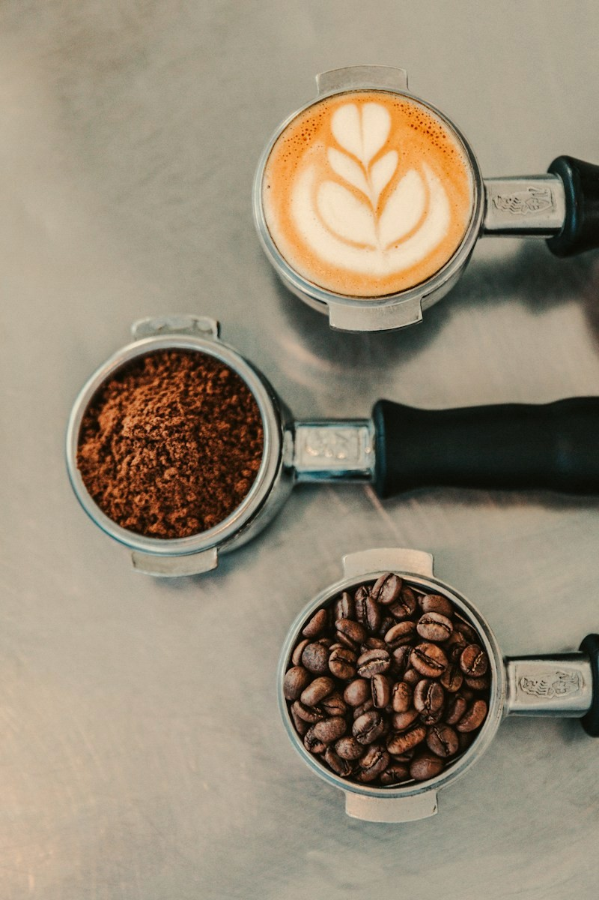

كيف تضبط وصفة V60 مثالية في المنزل بخطوات بسيطة؟
تعرف على قاعدة النسبة الذهبية (1:15)، درجة حرارة الماء المناسبة، وكيفية توزيع الصبات الأربع لاستخلاص متوازن.
جرب الوصفة في الحاسبة ←مقالات علمية وعملية يكتبها خبراء التحميص والباريستا في محمصة أثر لإثراء معرفتك بالقهوة.

تعرف على قاعدة النسبة الذهبية (1:15)، درجة حرارة الماء المناسبة، وكيفية توزيع الصبات الأربع لاستخلاص متوازن.
جرب الوصفة في الحاسبة ←
لماذا تتميز المحاصيل المجففة بقوام فاكهي ثقيل بينما تتألق المحاصيل المغسولة بصفاء الإيحاءات الحمضية والزهرية؟
استكشف المحاصيل ←اكتشف أهمية فترة راحة القهوة (Degassing) بعد الحمص، وأفضل الطرق لحماية الحبوب من الرطوبة والهواء.
اقرأ المزيد في الأسئلة ←